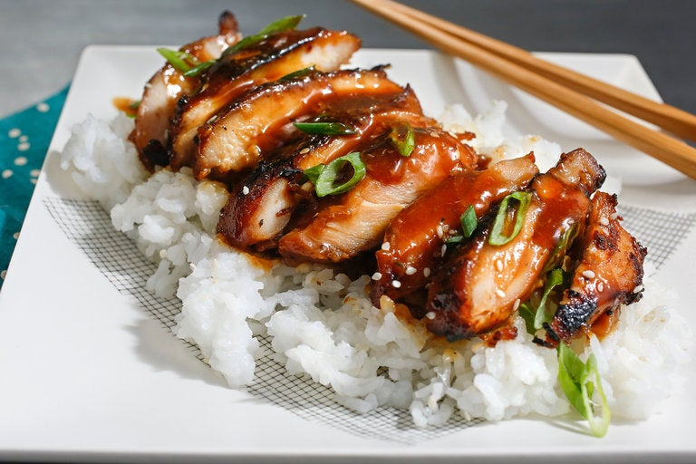

Chicken Teriyaki

Description
Chicken teriyaki is a beloved Japanese dish that has gained widespread recognition and popularity around the world.
It showcases the unique blend of sweet and savory flavors that characterize Japanese cuisine.
While its precise origin is unclear, teriyaki as a cooking technique has been practiced in Japan for centuries.
Teriyaki refers to the method of grilling or broiling meat, fish, or vegetables after marinating them in a soy-based sauce.
The term "teriyaki" itself comes from the Japanese words "teri" meaning glossy and "yaki" meaning grilled or broiled.
The technique was traditionally used to preserve food by coating it with a sweet and savory glaze made from soy sauce, mirin, and sugar.
Chicken teriyaki has evolved to become a staple in Japanese restaurants and households, representing the balance of flavors and simplicity that Japanese cuisine is known for.
It is often served with steamed rice, providing a satisfying and delicious meal.
The popularity of chicken teriyaki has transcended cultural boundaries, offering a taste of Japan to people around the world and becoming a symbol of the global appreciation for Japanese culinary traditions.
Ingredients
- 1 cup soy sauce
- 1 cup granulated sugar
- 1 1/2 teaspoons brown sugar
- 6 cloves garlic, crushed in a press
- 2 tablespoons grated fresh ginger
- 1/4 teaspoon freshly ground black pepper
- 1 3-inch cinnamon stick
- 1 tablespoon pineapple juice
- 8 skinless, boneless chicken thighs
- 2 tablespoons cornstarch
Steps
- In a small saucepan, combine all ingredients except cornstarch and chicken. Bring to boil over high heat. Reduce heat to low and stir until sugar is dissolved, about 3 minutes. Remove from heat and let cool. Discard cinnamon stick and mix in ½ cup water.
- Place chicken in a heavy-duty sealable plastic bag. Add soy sauce mixture, seal bag, and turn to coat chicken. Refrigerate for at least an hour, ideally overnight.
- Remove chicken and set aside. Pour mixture into a small saucepan. Bring to a boil over high heat, then reduce heat to low. Mix cornstarch with 2 tablespoons water and add to pan. Stir until mixture begins to thicken, and gradually stir in enough water (about ½ cup) until sauce is the consistency of heavy cream. Remove from heat and set aside.
- Preheat a broiler or grill. Lightly brush chicken pieces on all sides with sauce, and broil or grill about 3 minutes per side. While chicken is cooking, place sauce over high heat and bring to a boil, then reduce heat to a bare simmer, adding water a bit at a time to keep mixture at a pourable consistency. To serve, slice chicken into strips, arrange on plates, and drizzle with sauce.